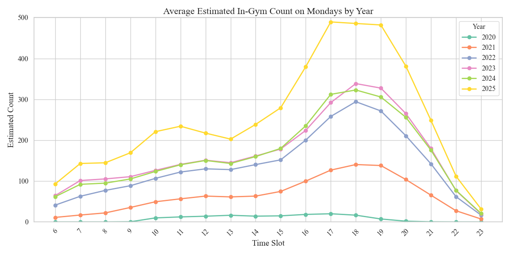

Gallery: Combined Analysis by Year (Groups 10-16)

Figure 10: Mondays by Year

Figure 11: Tuesdays by Year

Figure 12: Wednesdays by Year

Figure 13: Thursdays by Year

Figure 14: Fridays by Year

Figure 15: Saturdays by Year